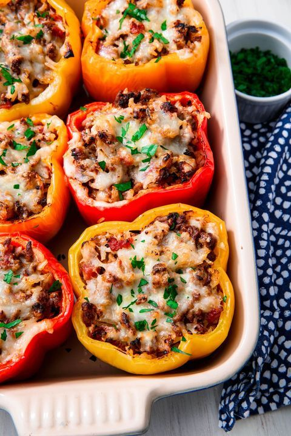

Classic stuffed peppers

Description
This is a recipe I found here
This recepe will teach you how to make this delicious plate in 1 hour and 20 minutes
Ingredients
- 1/2 c. uncooked rice
- 2 tbsp. extra-virgin olive oil, plus more for drizzling
- 1 medium onion, chopped
- 2 tbsp. tomato paste
- 3 cloves garlic, minced
- 1 lb. ground beef
- 1 (14.5-oz.) can diced tomatoes
- 1 1/2 tsp. dried oregano
- Kosher salt
- Freshly ground black pepper
- 6 bell peppers, tops and cores removed
- 1 c. shredded Monterey jack
- Freshly chopped parsley, for garnish
Steps
-
Preheat oven to 400°. In a small saucepan, prepare rice according to package instructions. In a large skillet over medium heat, heat oil. Cook onion until soft, about 5 minutes. Stir in tomato paste and garlic and cook until fragrant, about 1 minute more. Add ground beef and cook, breaking up meat with a wooden spoon, until no longer pink, 6 minutes. Drain fat.
-
Return beef mixture to skillet, then stir in cooked rice and diced tomatoes. Season with oregano, salt, and pepper. Let simmer until liquid has reduced slightly, about 5 minutes.
-
Place peppers cut side-up in a 9"-x-13" baking dish and drizzle with oil. Spoon beef mixture into each pepper and top with Monterey jack, then cover baking dish with foil.
-
Bake until peppers are tender, about 35 minutes. Uncover and bake until cheese is bubbly, 10 minutes more.
-
Garnish with parsley before serving.